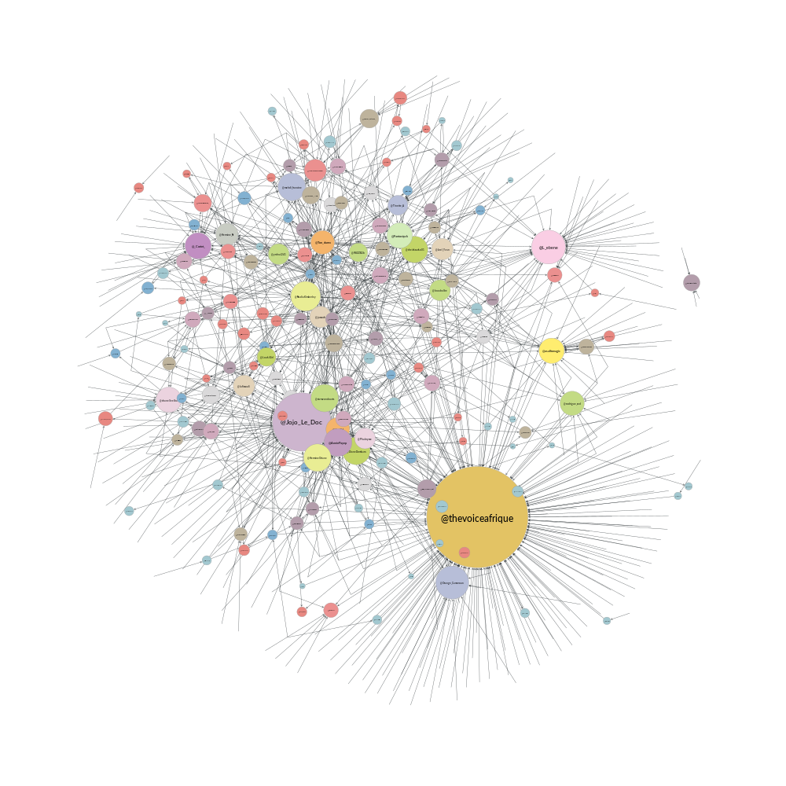
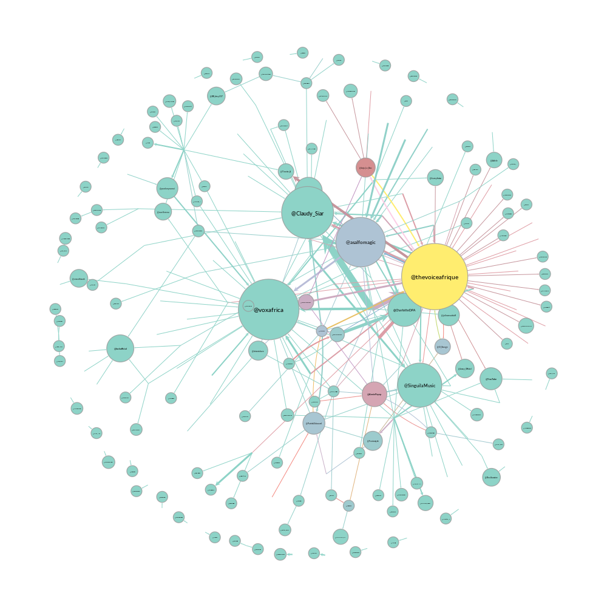
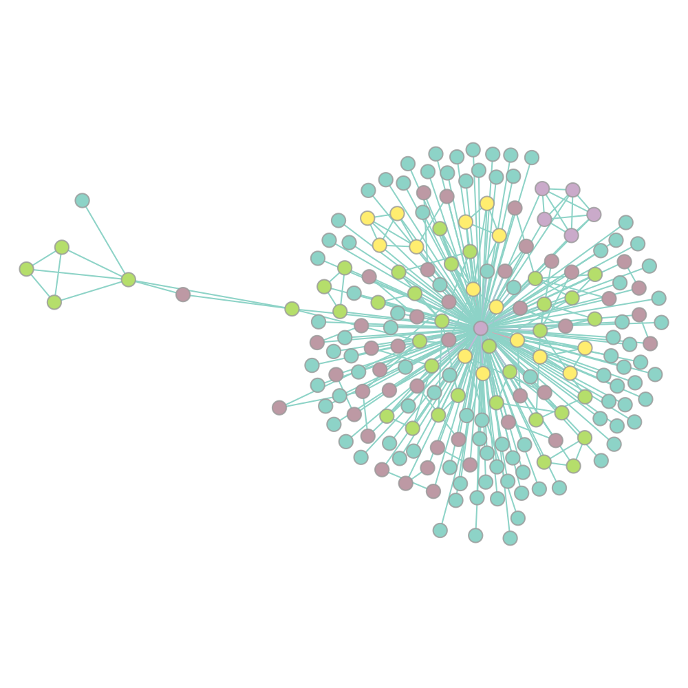

The Voice Afrique Tweets Mining Part 2
In the previous post, we showed how to use Twitter API and the excellent Tweepy Python library to collect data and store them in a MongoDB database. It's now time to start aking questions.
Many of the questions that we ask of our tweets data can be answered through social network analysis. Questions such as who is important?, who talks to whom?, and what is important? can all be answered through a network. Using proper network measures, we can find these important actors or topics in a network.
A network (or graph) is a set of vertices linked by a set of edges.
Vertices are the elements that comprise a network and edges join vertices.
Undirected edges join vertices in a symmetric fashion. If two people engage in a
conversation, then this is best represented by an undirected edge because for user
Alice to converse with user Bob, Bob must also converse with Alice.
Contrary to undirected edges are directed edges, which signify a one-way relationship
between two users. Alice retweet relationship can be thought of as a directed
edge because Alice can retweet Bob without Bob reciprocating.
Another property to consider is edge weight. The weight of an edge signifies its
importance when compared to other edges. One natural usage of weighted edges is in
a user mention network, where the weight is the number of times the a user say
Alice mentions another user, Bob.
Networks from tweets data
We begin by constructing a retweet network because it carries a very intuitive meaning. The nodes are individual users. The directed edges indicate the flow of information in the network. An edge from node \(A\) to node \(B\) indicates that \(A\) has retweeted \(B\), forwarding \(B\)’s information to his followers. Studying the structure of this network yields information about the ways the users communicate, and how highly they value each others’ information.
We use Graph-tool, an efficient Python module for manipulation and statistical analysis of graphs.
from collections import defaultdict import numpy as np import graph_tool.all as gt import pymongo host = "localhost" port = 27017 db = pymongo.MongoClient(host, port).search
The create_network function will help us create different kind of networks (retweet,
mention, hashtag coccurence) during this analysis. It takes a set of vertices and
edges and a keyword indicating the type (directed, undirected) of network.
font_family = "Lato Medium" output_size = (1000, 1000) def create_network(vertices, edges, directed=True): net = gt.Graph(directed=directed) label = net.new_vertex_property("string") vertices = list(vertices) net.add_vertex(len(vertices)) for i,v in enumerate(net.vertices()): label[v] = vertices[i] for u in net.vertices(): for v in net.vertices(): e = (label[u], label[v]) if edges.get(e, 0) > 0: net.add_edge(u, v) net.vertex_properties["label"] = label gt.remove_self_loops(net) return net def weight_from(net, edges, label): weight = net.new_edge_property("float") for e in net.edges(): s = label[e.source()] t = label[e.target()] k = edges[(s,t)] weight[e] = k return weight def pprint(net, metric, title, n=5, fmt="simple"): from tabulate import tabulate most = {} label = net.vertex_properties["label"] for v in retweet_net.vertices(): d = metric[v] l = label[v] most[l] = d users = sorted(most, key=lambda k: most[k], reverse=True)[:n] top = {"": np.arange(1,n+1), title: users} tabular = tabulate(top, headers="keys", tablefmt=fmt) print(tabular)
Retweet network
vertices = set() edges = defaultdict(int) for tweet in db.thevoice.find(): if "retweeted_status" in tweet.keys(): s = "@" + tweet["user"]["screen_name"] vertices.add(s) t = "@" + tweet["retweeted_status"]["user"]["screen_name"] vertices.add(s) e = (s, t) edges[e] += 1 retweet_net = create_network(vertices, edges)
Centrality
Often, we want to know who is the most important person in the network. The question of importance may not be as straightforward as it seems. There are several dimensions along which one may be considered important. Measures of importance in social networks are called centrality measures. Three (degree centrality, eigenvector centrality and betweeness centrality) of these measures are the most frequently used in social media analysis. Here, we discuss the first two of them. Each provides a different view of who is important in the network. We will use the retweet network for the purpose.
In degree centrality - Who is the most retweeted?
One of the most commonly used centrality measures is degree centrality. The calculation is simple: count the number of links attached to the node, this is their degree centrality. In the case of a directed graph, there are two interpretations: In-Degree Centrality, the number of edges entering the node, and Out-Degree, the number of edges leaving the node. In the context of our retweet networks, In-Degree Centrality is the number of users that retweet the node, and Out-Degree Centrality is the number of users the node retweets. The figure below shows such a network with our tweets data.
deg = retweet_net.degree_property_map("in") label = retweet_net.vertex_properties["label"] vsize = gt.prop_to_size(deg, ma=100) vfsize = gt.prop_to_size(deg, ma=12) pos = gt.arf_layout(retweet_net) gt.graph_draw(retweet_net, pos, vertex_size=vsize, vertex_text=label, vertex_font_size=vfsize, vertex_fill_color=deg, vertex_font_family=font_family, output_size=output_size, output="images/retweet_net_in_centrality.png", )
pprint(retweet_net, deg, "Most retweeted", 10)
| Most retweeted | |
|---|---|
| 1 | @thevoiceafrique |
| 2 | @Jojo_Le_Doc |
| 3 | @L_ebene |
| 4 | @AnniePayep |
| 5 | @_Coriet_ |
| 6 | @Fantastyck |
| 7 | @asalfomagic |
| 8 | @Ton_durex |
| 9 | @Arn8ld |
| 10 | @Hermine_N |
We see on the figure and the table above, without a surprise that the official
page of the event, @thevoiceafrique is the most retweeted. We also see that one the
coaches, @asalfomagic is retweeted a lot. In the topic modeling
and sentiment analysis
post, we will see if we can tell more about that.
Egeinvector centrality - Who is the most influencial?
With Degree Centrality the key question was "how many people retweeted this node?" Eigenvector Centrality builds upon this to ask "how important are these retweeters?"
eig = gt.eigenvector(retweet_net)[1] label = retweet_net.vertex_properties["label"] vsize = gt.prop_to_size(eig, ma=100) vfsize = gt.prop_to_size(eig, ma=12) pos = gt.arf_layout(retweet_net) gt.graph_draw(retweet_net, pos, vertex_size=vsize, vertex_text=label, vertex_font_size=vfsize, vertex_fill_color=eig, vertex_font_family=font_family, output_size=output_size, output="images/retweet_net_eig_centrality.png", )

pprint(retweet_net eig, "Most influencial", 10)
| Most influencial | |
|---|---|
| 1 | @thevoiceafrique |
| 2 | @Jojo_Le_Doc |
| 3 | @DianeDomkam |
| 4 | @AnniePayep |
| 5 | @Ton_durex |
| 6 | @tvmvondoarts |
| 7 | @Fantastyck |
| 8 | @Tinette_A |
| 9 | @NadiaKimberley |
| 10 | @jussoch |
We see in the figure and the table above that the strucutre of the network and the
ranking have changed. Some users kept thier position, other downweighted, and other
upweighted. We see that there are new "players" in the ranking table while others who where previously in the degree centrality table, went away,
like @L_ebene and @_Coriet_.
Mentions network
In the mention network the edges are weighted to answer the question who mentions who the most?
vertices = set() edges = defaultdict(int) for tweet in db.thevoice.find(): if not("retweeted_status" in tweet.keys()): mentions = tweet["entities"]["user_mentions"] if mentions: s = "@" + tweet["user"]["screen_name"] vertices.add(s) for ment in mentions: t = "@" + ment["screen_name"] vertices.add(t) e = (s, t) edges[e] += 1 mention_net = create_network(vertices, edges)
With that,
mention_net = gt.GraphView(mention_net, vfilt=lambda v: not(v.in_degree() == 0 and v.out_degree() == 0)) vbet, ebet = gt.betweenness(mention_net) label = mention_net.vertex_properties["label"] deg = mention_net.degree_property_map("in") vsize = gt.prop_to_size(deg, ma=100) vfsize = gt.prop_to_size(deg, ma=10) weight = weight_from(mention_net, edges, label) pos = gt.arf_layout(mention_net) gt.graph_draw(mention_net, pos, vertex_size=vsize, vertex_text=label, vertex_fill_color=vbet, vertex_font_size=vfsize, vertex_font_family=font_family, edge_pen_width=weight, edge_color=ebet, output_size=output_size, vorder=vbet, output="images/mention_net.png", )
pprint(mention_net, deg, "Most mentioned", 10)
| Most influencial | |
|---|---|
| 1 | @voxafrica |
| 2 | @thevoiceafrique |
| 3 | @Claudy_Siar |
| 4 | @asalfomagic |
| 5 | @SingulaMusic |
| 6 | @CharlotteDPA |
| 7 | @lockofficial |
| 8 | @AnniePayep |
| 9 | @Youtube |
| 10 | @PatrickEdooard |
Hashtags coccurence network
All of our network constructions so far have only considered users as nodes and edges as retweets or mentions. We can choose any object as a node and any relation as an edge. Let’s take a look at another network construction that allows us to ask different questions about our tweets data.
What if we wanted to see how hashtags are related? There are many valid ways to measure this, but, in this post, we will measure this using a network-based approach. We will consider a new network construction where nodes are individual hashtags and edges are hashtags that co-occur within the same Tweet. We will weight the edges by the number of times the hashtags co-occur in a Tweet. Because we do not care about the hashtag order, the edges are not directed.
vertices = set() edges = defaultdict(int) for tweet in db.thevoice.find(): if not("retweeted_status" in tweet.keys()): tags = tweet["entities"]["hashtags"] if len(tags) > 1: for tag in tags: s = "#" + tag["text"].lower() vertices.add(s) for tag in tags: t = "#" + tag["text"].lower() edges[(s,t)] += 1 hashtag_net = create_network(vertices, edges, directed=False)
The edge construction in the retweet an mention network was not a problem because
we where building a directed network where edges can be bidirectional. Then, something
like this {("Alice", "Bob"), ("Bob", "Alice")} is allowed. Meaning Alice
mentioned Bob and Bob also mentiones Alice. In the undirected case,
these two egdes are the same and then add redundant information in the network.
We need to remove those parallel edges.
gt.remove_parallel_edges(hashtag_net) kcore = gt.kcore_decomposition(hashtag_net, "total") vsize = gt.prop_to_size(kcore, ma=100) vfsize = gt.prop_to_size(kcore, ma=10) weight = weight_from(hashtag_net, edges, label) pos = gt.sfdp_layout(hashtag_net, vweight=kcore, eweight=weight) gt.graph_draw(hashtag_net, pos, vertex_fill_color=kcore, vertex_font_family=font_family, vertex_font_size=vfsize, edge_color=weight, output_size=output_size, output="images/hashtag_net.png" )
That's all for this post. In the next post, we will explore topic modeling a powerful tool to uncover hidden within a corpus of documents. Thanks for following.

Comments
Comments powered by Disqus